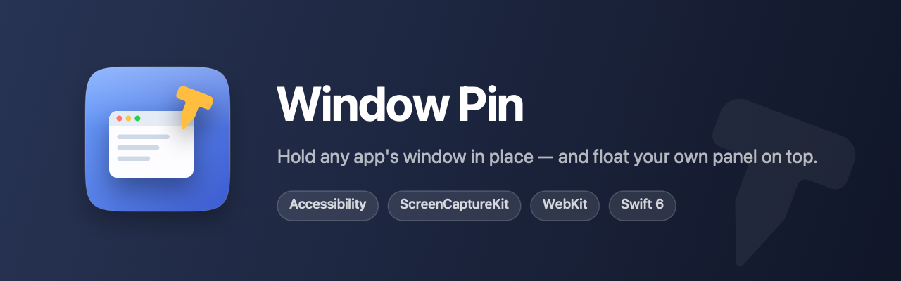
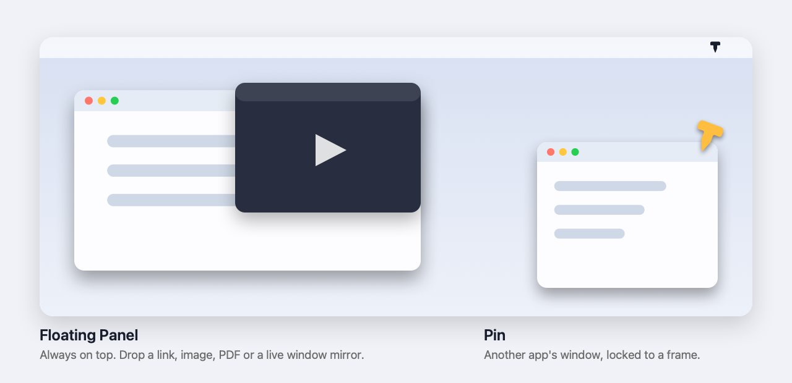

Hold any window exactly where you put it.
Window Pin locks another app's window to a fixed position and size — and gives you an always-on-top panel to drop a link, a PDF, a video, or a live mirror of any window into.

Two tools, one menu bar icon
They work independently and need different permissions — neither blocks the other.
Pin
Put a Chrome window bottom-right at 420×700 and it stays there. Move it and it snaps back. Snap presets are computed from the usable screen area, so the menu bar and Dock are respected automatically — across every display.
Accessibility permissionFloating Panel
A small window that stays above everything, on every Desktop. Drop a link and it opens as a real web page you can click and type in. Drop an image, PDF or video and it plays. Or mirror another app's window live.
Screen Recording for mirroring
What you get
Built with Swift 6 and public APIs only — no private frameworks.
Drop anything in
Links, images, PDFs, video and audio, or selected text. Type a URL straight into the panel's address bar.
Corner snapping
Top-left through bottom-right plus centre, at 25% / 33% / 50% width, portrait, or a size you type.
Real multi-display
Displays above, below or left of your main screen work correctly. Unplug one and a pinned window comes back rather than stranding off-screen.
Keys reach the mirror
Space, arrows, f and m are forwarded to the mirrored window — pause a video without leaving what you're doing.
Idles at nothing
Holding a window costs about 0.25% of one core. It listens for window events instead of polling.
Nothing leaves your Mac
No account, no telemetry, no network calls except the pages you choose to open in the panel.
What it can't do
These are macOS limits, measured rather than guessed. Better you know before downloading.
It can't force another app's window to stay on top. macOS has no public API to change another application's window level. That's exactly why the Floating Panel exists — mirroring into a window we own is the honest way to get always-on-top.
A mirror is view-only. Keyboard input is forwarded, but synthesised mouse clicks are discarded by macOS even when the target app is frontmost. Clicking the mirror takes you to the real window instead. For web pages, open the link in the panel — that's fully interactive.
A window on another Desktop can't be mirrored. macOS only draws the Desktop you're looking at, so there are no frames to capture. The panel detects this and offers to switch you there.
Full-screen windows can't be moved or resized by any app. Take the window out of full screen first.
Install
Takes about a minute. The app lives in your menu bar — there's no Dock icon.
-
Download and unzip
Drag
WindowPin.appinto yourApplicationsfolder, then open it. Look for the pin icon in your menu bar. -
Allow Accessibility
Needed to move and resize other apps' windows. The app will offer to open the right settings pane: System Settings → Privacy & Security → Accessibility, then switch Window Pin on.
-
Allow Screen Recording — only if you want mirroring
Pinning works without it. macOS reads this permission only at launch, so quit and reopen Window Pin after enabling it.
If macOS says the app can't be opened
Right-click WindowPin.app and choose Open, then confirm. You only need to do this once.
If that doesn't appear, go to System Settings → Privacy & Security, scroll down, and click Open Anyway.
Build it yourself
Swift Package Manager, no dependencies. If you'd rather not run a downloaded binary, this takes one command.
git clone https://github.com/andrew2722/app-window-pin.git
cd app-window-pin
make app
open build/WindowPin.app